Tokens: die kleinste EinheitTokens: the smallest unit
Ein Sprachmodell liest keine Buchstaben und keine Wörter, sondern Tokens: Zeichenfolgen aus einem festen Vokabular. Der Tokenizer des Fallbeispiels (aus dem Embedding-Modell multilingual-e5-small, übernommen von XLM-RoBERTa) kennt 250 002 solcher Einträge. Häufige Wörter sind ein Token, seltene zerfallen in Stücke: „Laugenpumpe“ wird zu ▁Lau gen pump e, wobei ▁ den Wortanfang markiert. Die Frage „Was bedeutet E:18?“ besteht aus 5 Tokens – und :18 ist eines davon, weil diese Zeichenfolge im Trainingstext häufig vorkam.
A language model reads neither letters nor words but tokens: character sequences from a fixed vocabulary. The case study's tokenizer (from the embedding model multilingual-e5-small, inherited from XLM-RoBERTa) knows 250,002 such entries. Frequent words are one token, rare ones fall into pieces: “Laugenpumpe” becomes ▁Lau gen pump e, where ▁ marks the beginning of a word. The question “Was bedeutet E:18?” consists of 5 tokens – and :18 is one of them, because this character sequence occurred often in the training text.
Das Vokabular entsteht vor dem Training aus Statistik: Byte-Pair-Encoding (Sennrich, Haddow und Birch 2016) verschmilzt schrittweise die häufigsten Zeichenpaare zu neuen Einträgen; SentencePiece (Kudo und Richardson 2018) tut das direkt auf dem Rohtext, ohne Vorzerlegung in Wörter, und deshalb für Deutsch, Englisch oder Chinesisch mit einem Verfahren. Weil der Trainingstext überwiegend englisch war, braucht derselbe Satz auf Deutsch mehr Tokens: 17 gegenüber 14 im Beispiel unten. Im Handbuch des Fallbeispiels kommen auf ein Token im Mittel 4,72 Zeichen. The vocabulary is built before training from statistics: byte-pair encoding (Sennrich, Haddow and Birch 2016) step by step merges the most frequent character pairs into new entries; SentencePiece (Kudo and Richardson 2018) does this directly on raw text, without pre-splitting into words, and therefore handles German, English or Chinese with one procedure. Because the training text was mostly English, the same sentence needs more tokens in German: 17 versus 14 in the example below. In the case study's manual, one token covers 4.72 characters on average.
- Was es istWhat it isEine Zeichenfolge aus einem festen Vokabular, hier 250 002 Einträge. Ein Wort kann ein Token sein oder mehrere.A character sequence from a fixed vocabulary, here 250,002 entries. A word can be one token or several.
- Wo es zähltWhere it countsKontextfenster, Preise der Anbieter, Maximallänge eines Embedding-Modells (512 bei e5), Chunk-Größe (440 im Fallbeispiel).Context window, provider prices, maximum length of an embedding model (512 for e5), chunk size (440 in the case study).
- FaustregelRule of thumbDeutsch mit diesem Tokenizer: rund 4,7 Zeichen je Token. Englisch braucht weniger Tokens für denselben Inhalt.German with this tokenizer: about 4.7 characters per token. English needs fewer tokens for the same content.
Das nächste TokenThe next token
Ein Sprachmodell rechnet in jedem Schritt dasselbe aus: Aus den bisherigen Tokens entsteht eine Wahrscheinlichkeitsverteilung über das gesamte Vokabular, das Modell wählt daraus ein Token, hängt es an und beginnt von vorn. Das Werkzeug unten zeigt diese Verteilung für den Satzanfang „Die Waschmaschine zeigt den Fehlercode E:18. Das bedeutet, dass“, berechnet mit dem offenen Basismodell Qwen/Qwen2.5-0.5B. Auf Rang 1 steht „ die“ mit 22 Prozent, dann „ der“ und „ das“; erst mit den Wahrscheinlichkeiten aller 151 665 Tokens ergibt sich 100 Prozent. At every step a language model computes the same thing: from the tokens so far arises a probability distribution over the whole vocabulary, the model picks one token from it, appends it and starts over. The tool below shows this distribution for the sentence start “Die Waschmaschine zeigt den Fehlercode E:18. Das bedeutet, dass”, computed with the open base model Qwen/Qwen2.5-0.5B. In first place is “ die” with 22 percent, then “ der” and “ das”; only the probabilities of all 151,665 tokens add up to 100 percent.


Wie das Modell aus der Verteilung wählt, entscheidet das Sampling. Die Temperatur T teilt vor dem Softmax alle Logits: pi = exp(zi/T) / Σj exp(zj/T). Bei T → 0 bleibt nur das Maximum übrig, die Antwort ist bei gleicher Frage immer dieselbe; bei großem T werden seltene Tokens wahrscheinlicher, bis der Text zerfällt. Holtzman et al. (2020) zeigen beide Enden: reine Maximierung wiederholt sich stumpf, zu viel Zufall verliert den Zusammenhang; Top-p-Sampling schneidet den unwahrscheinlichen Rest der Verteilung ab. Das Fallbeispiel arbeitet mit Temperatur 0, damit dieselbe Frage dieselbe belegte Antwort ergibt. How the model picks from the distribution is decided by sampling. The temperature T divides all logits before the softmax: pi = exp(zi/T) / Σj exp(zj/T). As T → 0 only the maximum remains and the answer to the same question is always the same; at large T rare tokens become more probable until the text falls apart. Holtzman et al. (2020) show both ends: pure maximisation repeats itself dully, too much randomness loses coherence; top-p sampling cuts off the improbable tail of the distribution. The case study runs at temperature 0 so that the same question yields the same grounded answer.
Basismodell gegen Chatmodell.Base model versus chat model. Das Werkzeug nutzt ein kleines Basismodell, das nur Text fortsetzt. Chatmodelle wie gemma-4-12b-it haben zusätzlich gelernt, auf Anweisungen zu antworten (nächster Abschnitt). Der Rechenschritt ist derselbe: eine Verteilung, ein Token, von vorn.The tool uses a small base model that only continues text. Chat models such as gemma-4-12b-it have additionally learned to respond to instructions (next section). The computation is the same: one distribution, one token, start over.
Transformer und TrainingTransformer and training
Die Verteilung berechnet ein Transformer (Vaswani et al. 2017): ein Netz aus Schichten, in denen jedes Token per Attention gewichtet auf alle vorherigen Tokens schaut. „E:18“ bekommt so den Kontext „Fehlercode“ und „Waschmaschine“ mit. Das Netz besteht aus Milliarden Parametern; gemma-4-12b hat rund zwölf Milliarden, das Werkzeugmodell Qwen2.5-0.5B eine halbe. Diese Parameter sind gelernt, nicht programmiert. The distribution is computed by a transformer (Vaswani et al. 2017): a network of layers in which every token looks at all previous tokens with weights, via attention. “E:18” thereby carries the context “Fehlercode” and “Waschmaschine”. The network consists of billions of parameters; gemma-4-12b has about twelve billion, the tool model Qwen2.5-0.5B half a billion. These parameters are learned, not programmed.
Das Training läuft in drei Stufen. Im Vortraining lernt das Modell aus Billionen Tokens Text, das jeweils nächste Token vorherzusagen; daraus entstehen Sprachgefühl und Weltwissen bis zum Stichtag der Daten. Brown et al. (2020) zeigten mit 175 Milliarden Parametern, dass ein solches Modell Aufgaben aus wenigen Beispielen im Prompt löst. Im Instruktionstuning lernt es aus Beispieldialogen, Anweisungen zu befolgen; im Präferenzabgleich bewerten Menschen Antwortpaare, und das Modell wird auf die bevorzugten hin optimiert (RLHF, Ouyang et al. 2022; ein 1,3-Milliarden-Modell mit diesem Training wurde dem 175-Milliarden-Basismodell vorgezogen). Das Ergebnis heißt Chatmodell; die Endung -it in gemma-4-12b-it steht für instruction-tuned.
Training runs in three stages. In pre-training the model learns from trillions of tokens of text to predict the next token; from this arise a feel for language and world knowledge up to the data cutoff. Brown et al. (2020) showed with 175 billion parameters that such a model solves tasks from a few examples in the prompt. In instruction tuning it learns from example dialogues to follow instructions; in preference alignment humans rate answer pairs and the model is optimised towards the preferred ones (RLHF, Ouyang et al. 2022; a 1.3-billion model with this training was preferred over the 175-billion base model). The result is called a chat model; the suffix -it in gemma-4-12b-it stands for instruction-tuned.


Quantisierung: warum 12 Milliarden Parameter auf einen Laptop passenQuantisation: why 12 billion parameters fit on a laptop
Jeder Parameter ist eine Zahl. Mit 16 Bit je Zahl braucht gemma-4-12b rund 24 GB Speicher; LM Studio lädt das Modell im Fallbeispiel mit 6 Bit je Parameter (Stand 19.09.2026, LM-Studio-API), also mit rund einem Drittel. Die Antworten werden dadurch etwas ungenauer, das Modell läuft aber auf einem Rechner mit 16 GB Arbeitsspeicher. Dasselbe Prinzip nutzt Lab 05 für das Embedding-Modell im Browser: 8 Bit statt 32, 118 MB statt 470.Every parameter is a number. At 16 bits per number gemma-4-12b needs about 24 GB of memory; in the case study LM Studio loads the model with 6 bits per parameter (as of 19 Sept 2026, LM Studio API), so with about a third. Answers become slightly less precise, but the model runs on a machine with 16 GB of RAM. Lab 05 uses the same principle for the embedding model in the browser: 8 bits instead of 32, 118 MB instead of 470.
Das KontextfensterThe context window
Alles, was das Modell bei einer Antwort sieht, steht in einem Fenster fester Länge, gemessen in Tokens: Systemprompt, Frage, mitgegebene Texte und die Antwort selbst. gemma-4-12b-it meldet in LM Studio ein Fenster von 262 144 Tokens (Stand 19.09.2026); ältere oder kleinere Modelle haben 4 096 oder 8 192. Das Fenster ist ein Budget. Was nicht hineinpasst, sieht das Modell nicht, und Liu et al. (2023) zeigen, dass Modelle Informationen in der Mitte sehr langer Kontexte schlechter nutzen als am Anfang oder Ende. Das Fallbeispiel begrenzt die Handbuchauszüge deshalb auf 14 000 Zeichen, nach dem Maß dieses Tokenizers rund 2 966 Tokens; der Systemprompt allein belegt 279 Tokens. Everything the model sees when answering sits in a window of fixed length, measured in tokens: system prompt, question, supplied texts and the answer itself. In LM Studio, gemma-4-12b-it reports a window of 262,144 tokens (as of 19 Sept 2026); older or smaller models have 4,096 or 8,192. The window is a budget. What does not fit, the model does not see, and Liu et al. (2023) show that models use information in the middle of very long contexts worse than at the beginning or end. The case study therefore limits the manual excerpts to 14,000 characters, about 2,966 tokens by this tokenizer's measure; the system prompt alone takes 279 tokens.
- EnthältContainsSystemprompt + Frage + mitgegebene Texte + Antwort. Die Antwort zählt mit.System prompt + question + supplied texts + answer. The answer counts.
- GrenzeLimitModellabhängig, 4 096 bis über 200 000 Tokens. Größer heißt langsamer und teurer je Anfrage.Model-dependent, 4,096 to over 200,000 tokens. Larger means slower and more expensive per request.
- Im FallbeispielIn the case study
CONTEXT_MAX_CHARS=14000für die Auszüge,ANSWER_MAX_TOKENS=1024für die Antwort.CONTEXT_MAX_CHARS=14000for the excerpts,ANSWER_MAX_TOKENS=1024for the answer.
Halluzination und WissensstandHallucination and knowledge cutoff
Auf die nackte Frage „Was bedeutet der Fehlercode E:18?“ antwortete gemma-4-12b-it am 19.09.2026 in LM Studio: Asked the bare question “Was bedeutet der Fehlercode E:18?”, gemma-4-12b-it answered in LM Studio on 19 Sept 2026:
„Der Fehlercode E:18 kann je nach Gerät und Hersteller unterschiedliche Bedeutungen haben. Häufig tritt er bei Waschmaschinen oder Geschirrspülern auf und weist auf ein Problem mit der Wasserzufuhr oder dem Wasserdruck hin. […] Schauen Sie am besten in die Bedienungsanleitung oder auf der Website des Herstellers nach.“
“The error code E:18 can have different meanings depending on the appliance and manufacturer. It often occurs on washing machines or dishwashers and indicates a problem with the water supply or water pressure. […] It is best to check the manual or the manufacturer's website.” (translated from the German answer)
Das Handbuch sagt etwas anderes: Laugenpumpe verstopft oder Ablaufschlauch verstopft, also das Gegenteil von Wasserzufuhr. Die Antwort ist grammatisch einwandfrei, vorsichtig formuliert und falsch. Ji et al. (2023) nennen das Halluzination: Das Modell erzeugt Inhalte, die nicht durch Wissen gedeckt sind, weil sein Verfahren in jedem Schritt ein plausibles nächstes Token verlangt und kein Schritt „ich weiß es nicht“ heißt. Der zweite Grund ist der Wissensstand: Das Vortraining endet an einem Stichtag, und ein Handbuch, das nicht im Trainingstext war, kennt das Modell nicht – gleich, wie neu oder alt es ist. The manual says something else: drain pump blocked or drain hose blocked, the opposite of water supply. The answer is grammatically flawless, cautiously worded and wrong. Ji et al. (2023) call this hallucination: the model produces content not covered by knowledge because its procedure demands a plausible next token at every step, and no step means “I don't know”. The second reason is the knowledge cutoff: pre-training ends at a cutoff date, and a manual that was not in the training text is unknown to the model – however new or old it is.
Der rote FadenThe thread
Die Frage „Was bedeutet E:18?“ begleitet Sie durch alle zehn Labs. Hier hat sie ein Modell allein falsch beantwortet. Lab 02 zeigt, wie dieselbe Frage mit dem Handbuch im Kontextfenster richtig und mit Seitenzahl beantwortet wird, und Lab 08 misst, wie oft das gelingt.The question “Was bedeutet E:18?” accompanies you through all ten labs. Here a model on its own answered it wrongly. Lab 02 shows how the same question is answered correctly, with page numbers, once the manual is in the context window, and lab 08 measures how often that succeeds.
ÜbungenExercises
Fünf Übungen: Tokens zählen, den Rechenschritt benennen, die Temperatur bedienen, ein Kontextbudget rechnen und die Halluzination einordnen.Five exercises: count tokens, name the computation, operate the temperature, compute a context budget and classify the hallucination.
ZusammenfassungSummary
- Ein Token ist eine Zeichenfolge aus einem festen Vokabular; deutsche Wörter zerfallen in mehr Tokens als englische.A token is a character sequence from a fixed vocabulary; German words fall into more tokens than English ones.
- Ein Sprachmodell berechnet in jedem Schritt eine Verteilung über das Vokabular und hängt ein Token an; Temperatur regelt den Zufall dieser Wahl.At every step a language model computes a distribution over the vocabulary and appends one token; temperature controls the randomness of that choice.
- Vortraining, Instruktionstuning und Präferenzabgleich ändern die Parameter; danach steht das Wissen des Modells fest.Pre-training, instruction tuning and preference alignment change the parameters; after that the model's knowledge is fixed.
- Das Kontextfenster ist ein Budget in Tokens, in das auch die Antwort gehört.The context window is a budget in tokens that also has to hold the answer.
- Halluzination folgt aus dem Verfahren; das Handbuch zur Laufzeit mitzugeben ist der Weg, den Lab 02 beginnt.Hallucination follows from the mechanism; supplying the manual at query time is the path lab 02 begins.
QuellenSources
- Vaswani, A. et al. (2017): Attention Is All You Need. NeurIPS. arXiv:1706.03762
- Brown, T. B. et al. (2020): Language Models are Few-Shot Learners. arXiv:2005.14165
- Ouyang, L. et al. (2022): Training language models to follow instructions with human feedback. arXiv:2203.02155
- Sennrich, R., Haddow, B., Birch, A. (2016): Neural Machine Translation of Rare Words with Subword Units. ACL. arXiv:1508.07909
- Kudo, T., Richardson, J. (2018): SentencePiece: A simple and language independent subword tokenizer and detokenizer for Neural Text Processing. arXiv:1808.06226
- Conneau, A. et al. (2020): Unsupervised Cross-lingual Representation Learning at Scale (XLM-R). ACL. arXiv:1911.02116
- Holtzman, A. et al. (2020): The Curious Case of Neural Text Degeneration. ICLR. arXiv:1904.09751
- Liu, N. F. et al. (2023): Lost in the Middle: How Language Models Use Long Contexts. arXiv:2307.03172
- Ji, Z. et al. (2023): Survey of Hallucination in Natural Language Generation. ACM Computing Surveys 55(12). arXiv:2202.03629
- Wang, L. et al. (2024): Multilingual E5 Text Embeddings: A Technical Report. arXiv:2402.05672; Modellkarte intfloat/multilingual-e5-small (12 Schichten, 384 Dimensionen, 512 Tokens), abgerufen 19.09.2026
- Messungen dieses Labs:
data/tokens.json(e5-Tokenizer),data/logits.json(Qwen/Qwen2.5-0.5B, Apache-2.0),data/antworten.json(gemma-4-12b-it-mlx in LM Studio, 19.09.2026); Kontextfenster laut LM-Studio-API/api/v0/models, 19.09.2026.Measurements of this lab:data/tokens.json(e5 tokenizer),data/logits.json(Qwen/Qwen2.5-0.5B, Apache-2.0),data/antworten.json(gemma-4-12b-it-mlx in LM Studio, 19 Sept 2026); context window per LM Studio API/api/v0/models, 19 Sept 2026.